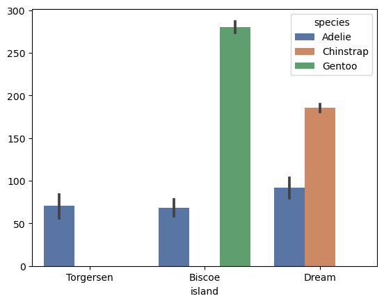
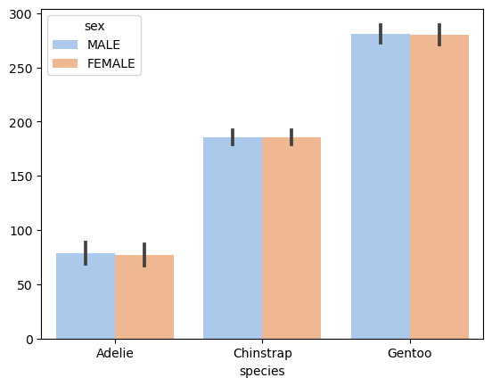
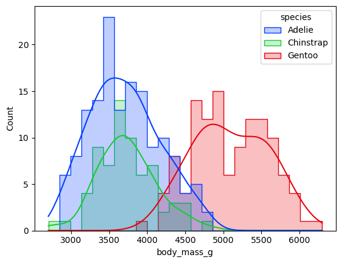
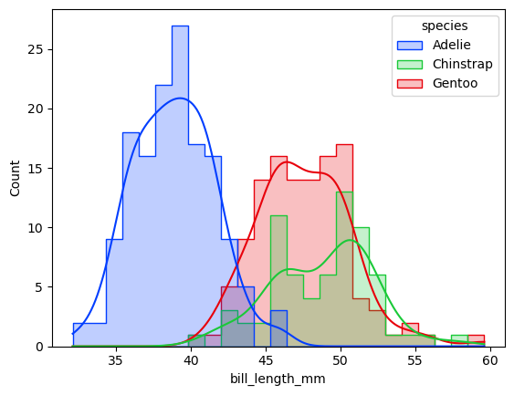
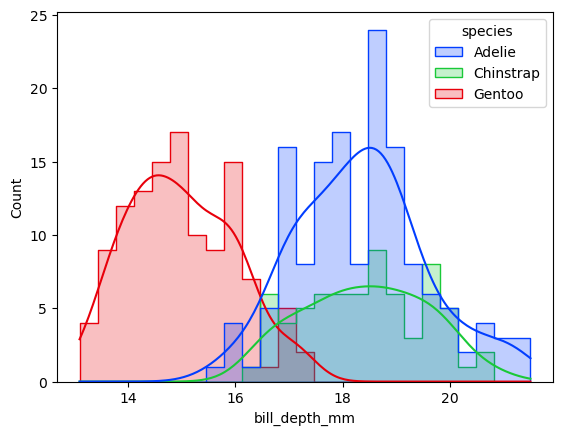
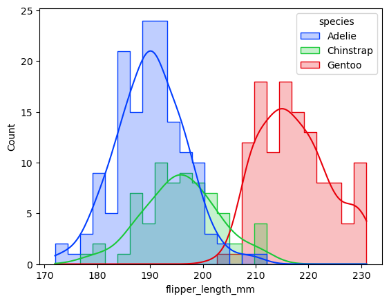
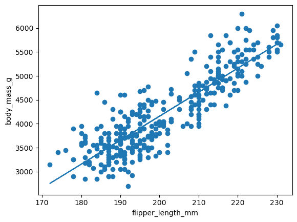
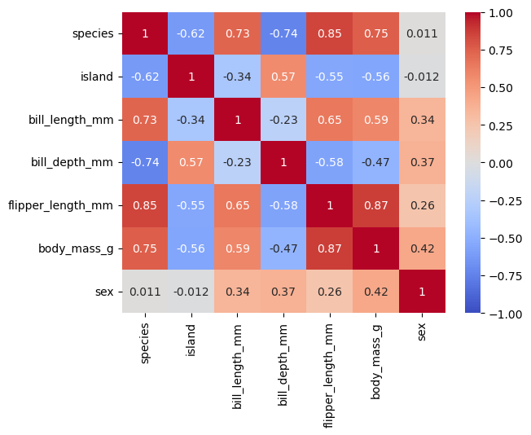

# Libraries
import numpy as np
import pandas as pd
import matplotlib.pyplot as plt
import seaborn as sns
from sklearn.preprocessing import LabelEncoder
from sklearn.linear_model import LinearRegression
import scipy.statsPenguins
This notebook is my attempt to analyze penguins dataset.
Loading
#Loading the Penguins dataset.
df = pd.read_csv("https://raw.githubusercontent.com/mwaskom/seaborn-data/master/penguins.csv")df.head()| species | island | bill_length_mm | bill_depth_mm | flipper_length_mm | body_mass_g | sex | |
|---|---|---|---|---|---|---|---|
| 0 | Adelie | Torgersen | 39.1 | 18.7 | 181.0 | 3750.0 | MALE |
| 1 | Adelie | Torgersen | 39.5 | 17.4 | 186.0 | 3800.0 | FEMALE |
| 2 | Adelie | Torgersen | 40.3 | 18.0 | 195.0 | 3250.0 | FEMALE |
| 3 | Adelie | Torgersen | NaN | NaN | NaN | NaN | NaN |
| 4 | Adelie | Torgersen | 36.7 | 19.3 | 193.0 | 3450.0 | FEMALE |
# Information about dataframe
df.info()<class 'pandas.core.frame.DataFrame'>
RangeIndex: 344 entries, 0 to 343
Data columns (total 7 columns):
# Column Non-Null Count Dtype
--- ------ -------------- -----
0 species 344 non-null object
1 island 344 non-null object
2 bill_length_mm 342 non-null float64
3 bill_depth_mm 342 non-null float64
4 flipper_length_mm 342 non-null float64
5 body_mass_g 342 non-null float64
6 sex 333 non-null object
dtypes: float64(4), object(3)
memory usage: 18.9+ KBCleaning dataset
# Checking missing values
df.isnull().sum()species 0
island 0
bill_length_mm 2
bill_depth_mm 2
flipper_length_mm 2
body_mass_g 2
sex 11
dtype: int64# Removing missing values
df.dropna(axis=0, inplace=True)df.isnull().sum()species 0
island 0
bill_length_mm 0
bill_depth_mm 0
flipper_length_mm 0
body_mass_g 0
sex 0
dtype: int64# Checking multiple values
df.duplicated()0 False
1 False
2 False
4 False
5 False
...
338 False
340 False
341 False
342 False
343 False
Length: 333, dtype: boolNo duplicate values. Now, I will work with dateset with only 333 rows.
# Correcting index
df.reset_index(drop=True)| species | island | bill_length_mm | bill_depth_mm | flipper_length_mm | body_mass_g | sex | |
|---|---|---|---|---|---|---|---|
| 0 | Adelie | Torgersen | 39.1 | 18.7 | 181.0 | 3750.0 | MALE |
| 1 | Adelie | Torgersen | 39.5 | 17.4 | 186.0 | 3800.0 | FEMALE |
| 2 | Adelie | Torgersen | 40.3 | 18.0 | 195.0 | 3250.0 | FEMALE |
| 3 | Adelie | Torgersen | 36.7 | 19.3 | 193.0 | 3450.0 | FEMALE |
| 4 | Adelie | Torgersen | 39.3 | 20.6 | 190.0 | 3650.0 | MALE |
| ... | ... | ... | ... | ... | ... | ... | ... |
| 328 | Gentoo | Biscoe | 47.2 | 13.7 | 214.0 | 4925.0 | FEMALE |
| 329 | Gentoo | Biscoe | 46.8 | 14.3 | 215.0 | 4850.0 | FEMALE |
| 330 | Gentoo | Biscoe | 50.4 | 15.7 | 222.0 | 5750.0 | MALE |
| 331 | Gentoo | Biscoe | 45.2 | 14.8 | 212.0 | 5200.0 | FEMALE |
| 332 | Gentoo | Biscoe | 49.9 | 16.1 | 213.0 | 5400.0 | MALE |
333 rows × 7 columns
Describing dataset
count1=df['species'].value_counts()
count2=df['island'].value_counts()
count3=df['sex'].value_counts()
print(count1,count2,count3)species
Adelie 146
Gentoo 119
Chinstrap 68
Name: count, dtype: int64 island
Biscoe 163
Dream 123
Torgersen 47
Name: count, dtype: int64 sex
MALE 168
FEMALE 165
Name: count, dtype: int64with sns.color_palette('deep'):
sns.barplot(data=df, x='island', y=df.index, hue='species')
with sns.color_palette('pastel'):
sns.barplot(data=df, x='species', y=df.species.index, hue='sex')
This dataset is not balanced, containing various counts of values for variables as it came from field ecological research.
Histograms of morphological values
A histogram is a visualization tool that represents the distribution of one or more variables by counting the number of observations which fall within discrete bins. Parameter kde=, if True, compute a kernel density estimate to smooth the distribution and show on the plot as (one or more) line(s). (https://seaborn.pydata.org/generated/seaborn.histplot.html)
with sns.color_palette('bright6'):
sns.histplot(data=df, x='body_mass_g', hue='species', element='step', kde=True, bins=25, )
Gentoo penguins are heavier than Adelie penguins and Chinstrap penguins.
with sns.color_palette('bright6'):
sns.histplot(data=df, x='bill_length_mm', hue='species', element='step', kde=True, bins=25)
Adelie penguins have shorter bills than Chinstrap penguins and Gentoo penguins.
with sns.color_palette('bright6'):
sns.histplot(data=df, x='bill_depth_mm', hue='species', element='step', kde=True, bins=25)
Bill depth is lower with Gentoo penguins than with Adelie penguins and Chinstrap penguins.
with sns.color_palette('bright6'):
sns.histplot(data=df, x='flipper_length_mm', hue='species', element='step',kde=True, bins=25)
Gentoo penguins have longer flipper than Adelie penguins and Chinstrap penguins.
Correlation
Correlation or dependence, is a relationship between variables. It could be positive - with one variable increasing, the other one increasing, too - or negative - with one variable increasing, the other one decreasing. I am going to make a comparison of flipper_length_mm and body_mass_g. The flipper is a big limb on the penguin’s body. I assume a positive correlation between the length of the flipper and the weight of the body of the whole penguin. This can be proved by the model of linear regression (https://realpython.com/linear-regression-in-python/#simple-linear-regression).
Linear Regression Model
import matplotlib.pyplot as plt
from scipy import stats
x = df['flipper_length_mm']
y = df['body_mass_g']
slope, intercept, r, p, std_err = stats.linregress(x, y)
def reg(x):
return slope * x + intercept
model = list(map(reg, x))
plt.scatter(x,y)
plt.plot(x, model)
plt.xlabel('flipper_length_mm')
plt.ylabel('body_mass_g')
plt.show()
Solid, positive correlation as fit line and distribution of values are oriented to the diagonal of the graph.
Counting of correlation coefficient’s values for whole dataset can show another possible relationships between values.
Encoding
Change of datatypes into int64 can help me to count the correlation of all variables. (https://www.geeksforgeeks.org/ml-label-encoding-of-datasets-in-python/)
# Encoding
encode=LabelEncoder()
df.species=encode.fit_transform(df.species)
df.island=encode.fit_transform(df.island)
df.sex=encode.fit_transform(df.sex)
df.info()<class 'pandas.core.frame.DataFrame'>
Index: 333 entries, 0 to 343
Data columns (total 7 columns):
# Column Non-Null Count Dtype
--- ------ -------------- -----
0 species 333 non-null int32
1 island 333 non-null int32
2 bill_length_mm 333 non-null float64
3 bill_depth_mm 333 non-null float64
4 flipper_length_mm 333 non-null float64
5 body_mass_g 333 non-null float64
6 sex 333 non-null int32
dtypes: float64(4), int32(3)
memory usage: 16.9 KBdf.astype('int64').dtypesspecies int64
island int64
bill_length_mm int64
bill_depth_mm int64
flipper_length_mm int64
body_mass_g int64
sex int64
dtype: objectAdelie has code 0, Chinstrap 1, Gentoo 2, male 0, female 1, island Torgensen 2, Dream island 1, Biscoe 0. The datatype was changed from object to integer. This unification can help me to analyze the whole dataset as some methods of statistics work with numbers mainly. Optimal datatype for model variables in this dataset is a number - integer64 as morphological values measured in mm and grams will stay precise.
Correlation Matrix
The default value of the parameter method of corr() function is ‘pearson’ - which means Pearson correlation coefficient. (https://en.wikipedia.org/wiki/Pearson_correlation_coefficient).
corr_coef=df.corr(method='pearson')
sns.heatmap(corr_coef, annot=True, cmap='coolwarm', vmin=-1,vmax=1)
Results between -0.59 and 0.59 indicate an omissible correlation. Variable island and sex shows only a weak correlation. Some correlation is between flipper_lenght_mm and bill_lenght_mm and between flipper_lenght_mm and bodymass_g. Species is a variable with correlation to any other variable which is not a surprise. Surprise is a weak correlation between sex and morphological values which is a misrepresentation given by containing values for males and females of three species in the same categories.
End